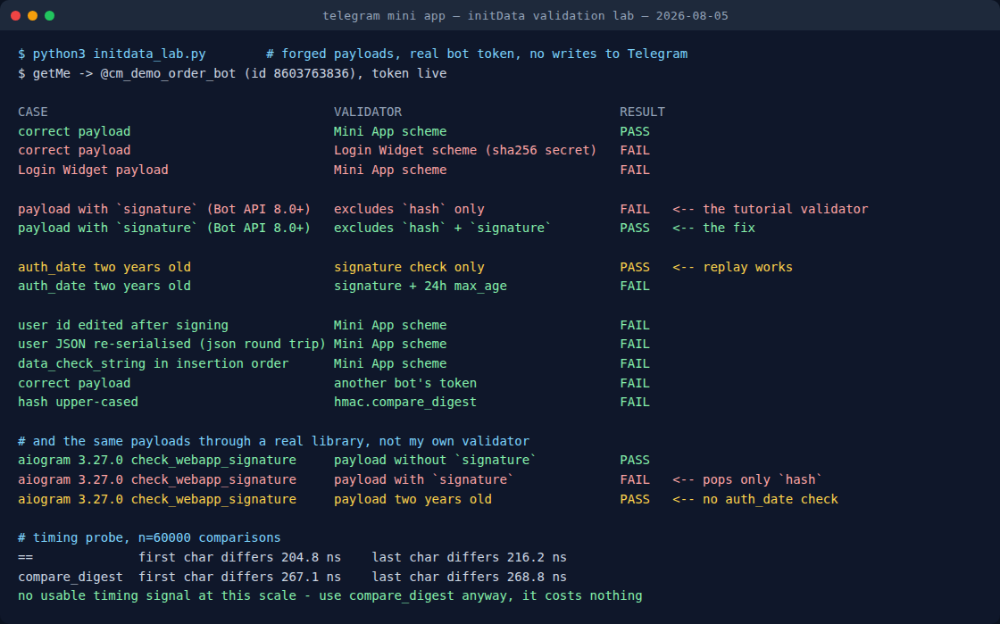

I Forged Telegram Mini App initData: What Passes Validation
A Mini App is the one part of a Telegram bot where the browser talks to your server directly, and the browser is not a place you get to trust. Everything your backend knows about who is on the other end arrives in a single query string called initData, handed over by the Telegram client. Whether that string is worth anything comes down to one field in it: hash.
Get the check right and an attacker cannot pretend to be another user. Get it subtly wrong and you land in one of two places: a backend that rejects every honest visitor, or one that happily accepts a payload someone captured months ago. Both are quiet failures. Neither shows up as an exception.
So I built the payloads myself. Sixteen of them, signed with a real bot token, deliberately broken one property at a time, then run through eight validator variants including one from a library plenty of production bots depend on. The results are below, and two of them surprised me.

initdata_lab.py, 5 August 2026. Every claim in this post comes from this run.How I tested it
The lab does not send anything to Telegram. It forges initData locally, signing each payload with the token of a throwaway bot (never one serving real users), and then asks each validator whether it believes the result. The only network call in the whole script is getMe, and it exists purely to prove the token is a live one rather than a plausible-looking string I typed.
Working from the forging side rather than the receiving side is the point. Anyone can write a validator that says yes to the one payload they have on hand. What you actually want to know is the shape of the boundary: which near-misses it lets through, and which honest payloads it turns away. You cannot see that without generating both.
One thing I did not do: capture a payload from a live Telegram client. Every payload here is constructed to the algorithm as Telegram documents it: hash over all fields except hash and signature, sorted alphabetically, joined with line feeds, keyed by HMAC_SHA256(bot_token, "WebAppData"). Where a result depends on how real clients behave rather than on the spec, I say so.
Two schemes that look exactly alike
Telegram has two of these signed-payload mechanisms, and they are not compatible.
The older one belongs to the Login Widget, the "Log in with Telegram" button on websites. Its secret key is a plain SHA-256 of the bot token. The Mini App scheme takes the same token and runs it through HMAC-SHA256 keyed with the literal string WebAppData. Same token, same hex-looking output, entirely different secret.
# Mini App: the token is the MESSAGE, "WebAppData" is the KEY
secret = hmac.new(b"WebAppData", token.encode(), hashlib.sha256).digest()
# Login Widget: the secret is just the hash of the token
secret = hashlib.sha256(token.encode()).digest()In the lab, a correct Mini App payload fails Login Widget validation and a Login Widget payload fails Mini App validation. Both directions, no exceptions. The two lines above are the difference, and I have watched a search for "telegram validate hash python" return the wrong one of them near the top more than once. If your Mini App rejects every single user on day one and the hash logic looks textbook, this is the first thing to check. The argument order in that first line is the whole bug.
The field that breaks the validator everyone copies
Here is the one worth the post.
Bot API 8.0 added a signature field to initData. It is an Ed25519 signature from Telegram itself, and its purpose is to let a third party (someone who does not hold your bot token) verify that a payload really came from Telegram. Useful addition. It also changed the input to the check every existing backend was already running, because signature arrives as just another field in the query string, and the data-check-string is built from all received fields except two: hash and signature.
A validator written before that release excludes only hash. Feed it a payload containing signature and it dutifully folds that field into the string it hashes, a string Telegram never hashed. The hash does not match. The payload is authentic. The user is rejected.
I ran that exact pair through aiogram, one of the most widely used Python frameworks for Telegram bots, at version 3.27.0:
| Payload | check_webapp_signature |
|---|---|
No signature field | PASS |
With signature field | FAIL |
| Signed two years ago | PASS |
The relevant line in its source is hash_ = parsed_data.pop("hash"), and nothing pops signature. I checked the published source for the current release, 3.30.0, and it reads the same way. There is a closed issue in that project about using constant-time comparison in this very function, so the code has had security eyes on it; the signature exclusion is simply a newer requirement than the function itself.
What I can and cannot claim here. I measured that this library rejects a payload built to the documented algorithm when that payload carries a signature field. I did not capture initData from a live client for this post, so I cannot tell you what share of real traffic includes the field today. If you run a Mini App on this library, that is a ten-minute experiment worth doing on your own logs — log the raw query string on a validation failure and look for signature= in it before you go hunting anywhere else.
The fix is one line, and it is worth writing defensively even if your framework handles it:
parsed.pop("hash", None)
parsed.pop("signature", None) # Bot API 8.0+, or your hash will never match
dcs = "\n".join(f"{k}={v}" for k, v in sorted(parsed.items()))A valid hash tells you nothing about when
This is the failure that runs the other way, and it is the one I would lose sleep over.
I signed a payload with an auth_date two years in the past. Pure signature check: PASS. Of course it does. HMAC has no opinion about clocks. It attests that these bytes were signed with this token and have not been edited since, and that is the entire claim.
Which means a captured initData string is a bearer token with no expiry. Anything that leaks one (a log line, an error report, a URL that ends up in a referrer header, a screenshot in a support ticket) has leaked a permanent impersonation of that user. The library check above returns True on my two-year-old payload too, and that is not a bug in the library: nothing in the spec asks it to know your session policy.
The clock is yours to add:
if time.time() - int(parsed["auth_date"]) > 86400: # 24h, tighten as needed
raise ValueError("initData too old")Twenty-four hours is the common default and is fine for a game or a planner. For anything touching money or account changes, minutes. Issue your own short-lived session token immediately after the first successful validation, so the long-lived string stops travelling with every request. The community platform documentation makes the same recommendation, and it is the single highest-value line of code in this whole post.
Three ways to break your own hash
The rest of the matrix is the boring, expensive category: honest payloads your own code turns away. All three produce the identical symptom, a mismatch on genuine data, and none of them tell you which one you hit.
Re-serialising the JSON. The user field is a JSON blob inside the query string. Parse it, then serialise it back before hashing, and Python's default json.dumps adds a space after every colon and comma. Different bytes, different hash, FAIL. Hash the raw string exactly as received; decode it afterwards, for your own use, never before the check.
Insertion order instead of alphabetical. Build the data-check-string in the order the fields happened to arrive and you get a FAIL that looks like a crypto problem and is really a sorted() problem. It is easy to miss because a lot of test payloads are alphabetical by accident.
Case. Upper-case the received hex digest and the comparison fails. To a person, AB and ab are the same digest; to a byte comparison they are not. Normalise before comparing if there is any chance of a proxy or a client library touching the string.
Two controls in the matrix behaved exactly as they should, which is the reassuring half of the exercise: editing the user id after signing fails, and validating with a different bot's token fails. The hash does the job it claims to do. Everything above is about the code wrapped around it.
The timing probe, and an honest null result
Comparing digests with == is the textbook timing-attack example, so I measured it rather than repeating the received wisdom: 60,000 comparisons each, one pair differing in the first character, one in the last.
The spread came out at roughly 205 to 217 nanoseconds for == and 267 to 269 for hmac.compare_digest, and the difference between "differs at the start" and "differs at the end" was smaller than the run-to-run noise on this machine. No usable signal at this scale, from a local loop with no network in the way.
Use compare_digest anyway. Not because I demonstrated an exploit, because I did not, but because it costs about sixty nanoseconds, removes an entire class of argument, and my inability to measure a leak from a laptop with the scheduler in the way is not evidence that nobody can measure one. The nice property of a cheap correct default is that you never have to be right about the threat model.
A validator that survives contact with Bot API 8.0
- Hash the raw values from the query string. Never decode-and-re-encode before hashing.
- Exclude both
hashandsignature. Explicitly, in your own code, even if the framework claims to. - Sort alphabetically, join with
\n. Not the arrival order. - Derive the secret as
HMAC_SHA256(token, "WebAppData"). The token is the message. It is not the Login Widget scheme. - Compare with
hmac.compare_digest, after normalising case. - Check
auth_dateagainst your clock and reject anything stale. Nothing upstream does this for you. - Swap the validated payload for your own short-lived session token, so the permanent string stops riding along on every request.
Six of those seven are one line each. The seventh is an afternoon, and it is the one that decides whether a leaked log file is an incident or a shrug.
Running a Mini App for something more fun than auth?
My free planner builds a Telegram game night (rounds, timings, poll structure) in about a minute, no signup.
Build a game night → Or read how to run one end to end.Where this leaves the third-party path
The signature field is not only an obstacle. It is what makes it possible for a service that does not hold your bot token to verify a payload came from Telegram, using Telegram's published Ed25519 public keys, with the data-check-string prefixed by <bot_id>:WebAppData. If you are building anything multi-tenant (a platform hosting other people's Mini Apps, an analytics endpoint, a shared backend), that is the check you want, precisely because it does not require collecting everyone's tokens.
I did not test that path here: forging a valid Ed25519 signature would require Telegram's private key, which is rather the point of it, so nothing in my lab can honestly speak to it. What the lab does show is that the field's arrival quietly changed the older check, and that the change is invisible until an honest user is standing outside your door.
The measured limits, on three pages — free
The same treatment as this post, applied to the rest of the API: 4096 counted in code points rather than bytes, a download cap that is binary and not decimal, callback_data at 64 bytes, the “max 8 buttons per row” rule that does not exist on the server, and a poll open_period silently clamped instead of refused. Each number bisected against the live API, none copied from the docs.
Telegram in Production — the parts that bite you
The validator from this post, finished: Python and Node, no dependencies, signature excluded, auth_date enforced, constant-time compare that returns 401 instead of throwing on a hostile hash. Plus poll payloads Telegram will not silently rewrite, a systemd unit linter for the two failure modes that cost me weeks, and a one-page pre-ship checklist. 55 tests you can run from the zip.
More from the Telegram build log
- Telegram's file size limits, to the byte: 20 MiB down, 50 MiB up, and an upload failure that returns no error at all.
- Telegram's 4096 limit is not characters: the cap counts code points, the entity offsets count UTF-16, and 4,096 emoji fit in one message.
- I tested Telegram's poll limits: twelve options, and one timer behaviour that closes your round early.
- 13 Telegram bots on a $4.17 VPS: the real RAM numbers, measured.
- I messaged 18 Telegram game bots: how many were still alive.
- Your dead Telegram bot still has a mailbox: the Mini App keeps working with the server off, and so do the profile methods that fix its front door.